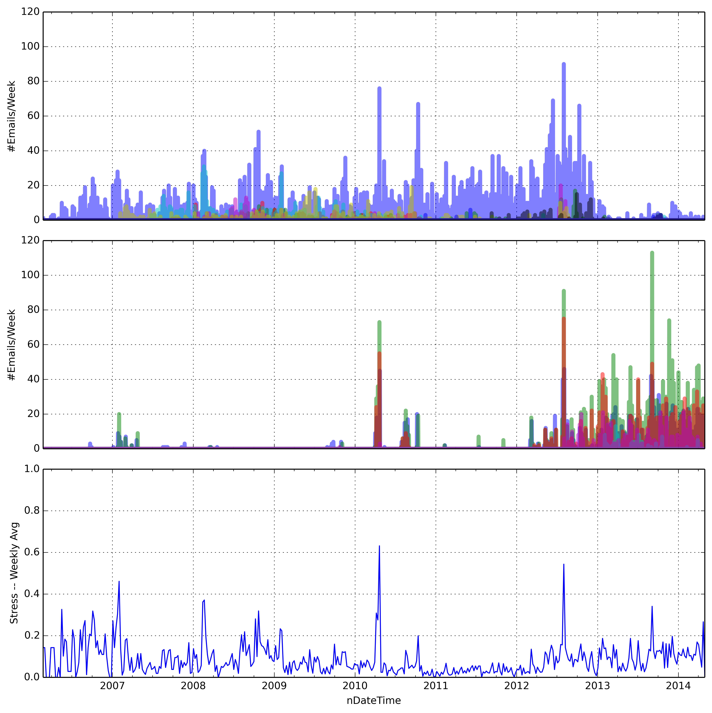
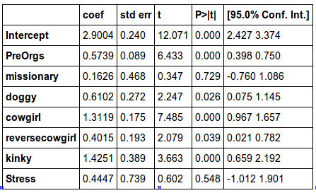
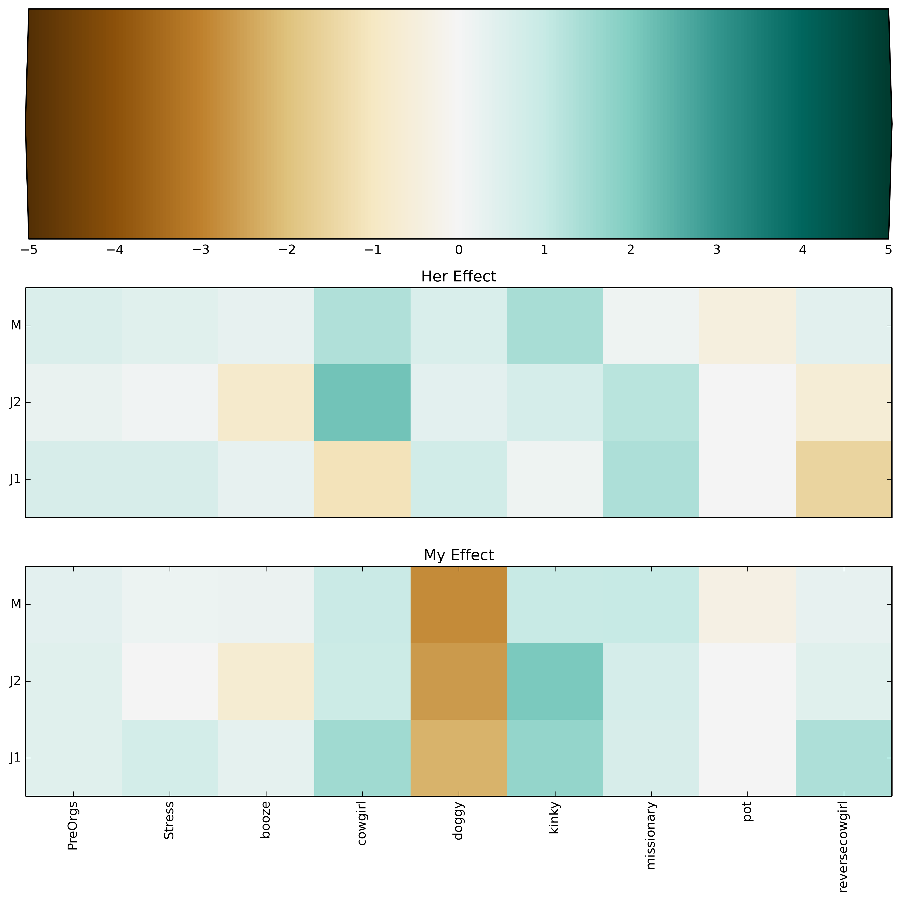

The Joy Of (Quantifying) Sex
A spoonful of sex helps the statistics go down.Will Dampier, PhD
Quantification Topics
Stress
Use python
imaplib to parse emails from work contacts.
Sexual Satisfaction
Use python and
statsmodels to find patterns in which tags I gave to each encounter.
Gmail Access
Pretty dang easy!
import imaplib
imap_server = imaplib.IMAP4_SSL("imap.gmail.com",993)
imap_server.login('judowill', open('SUPERSECRET.txt').read())
imap_server.select('[Gmail]/All Mail')def get_emails_person(address):
search = '(OR (TO "%(name)s") (FROM "%(name)s"))'
status, response = imap_server.search(None, search % {'name':address})
ids = response[0].split()
for _id in ids:
yield _iddef get_date_from_ids(ids):
resp, data = imap_server.FETCH(','.join(ids), 'RFC822.HEADER')
id_iter = iter(ids)
for d in data:
msg = email.message_from_string(d[1])
date = dateutil.parser.parse(msg['DATE'])
yield id_iter.next(), date
Emails Per Week
What about scale
Putting it together

Sex Quantification
I've tried multiple tools for keeping the data.
- Daytum
- TrackThisForMe
- Google Spreadsheets
Data Collection
I track 3 main things:
- Activities
- My Satisfaction (0-10)
- Her Satisfaction (0-10) inferred
I enter data shortly afterwards. I then enter the again data the next morning. Results shown are averages of the two points.
Sex Quantification
import pandas as pd
sex_data = pd.read_csv('projectdata/willdata.tsv',
sep = '\t',
parse_dates = [0],
index_col=0)
stress_data = pd.read_csv('results/stress.tsv', sep = '\t', parse_dates = [0])
final_data = pd.merge(sex_data, stress_data.groupby('nDateTime')[['Stress']].first(),
left_index=True,
right_index = True,
how = 'left')
final_data.head()
Frequency
Crazy Statistics
Use Linear Models to find the effect of the variables on both my and her rankings.
This is trivially accomplished using
statsmodels.
Linear Models
import statsmodels.formula.api as smf
eqn = 'HerRanking ~ PreOrgs + missionary + doggy + cowgirl + reversecowgirl + kinky + Stress'
res = smf.ols(eqn, data = final_data).fit()
res.summary()
Observation
Stress is not correlated with her statisfaction or mine.
Partial Residual Plot
A way to show the effect of an indepedent variable on the response variable after subtracting the effect of other items in the model.
Stress

Foreplay orgasms
Cowgirl
Booze
Summary

Observation
Different strokes for different folks.
Want to do an analysis like this?
This is all on Github.
http://github.com/judowill/sextalk/
http://judowill.github.io/sextalk/
How were these slides made?
JavaScript : reveal.js
Markdown : Daring Fireball
Markdown to HTML: md2reveal.py
(Written by a former Judo student of mine)